Sam Altman et OpenAI viennent de lancer GPT 6.1 SOL lors de leur journée des développeurs et ils le qualifient comme l'un des modèles les plus puissants qu'OpenAI ait jamais livrés. Dans cette vidéo, je vais vous montrer tout ce que vous devez savoir sur GPT 6.1 SOL, ce qu'il fait réellement, ce qu'il coûte et comment il se compare à Claude Opus 5.5 d'Anthropic pour votre flux de travail de trading et de recherche. Et en ce moment, Internet dit qu'il vient de faire paraître Opus 5.5 coûteux en comparaison. Alors commençons. Maintenant, il y a
Interface & Outils : Site web officiel d'OpenAI et interface de X (Twitter).
Contenu textuel & Code : Graphique évaluant le coût par tâche par rapport au score pour différents modèles d'IA (GPT-6.1 Sol, GPT-6 Sol, GPT-6 Astra, Opus 5.5).
Action / Démonstration : Présentation et analyse des performances comparatives et des coûts des nouveaux modèles d'intelligence artificielle.
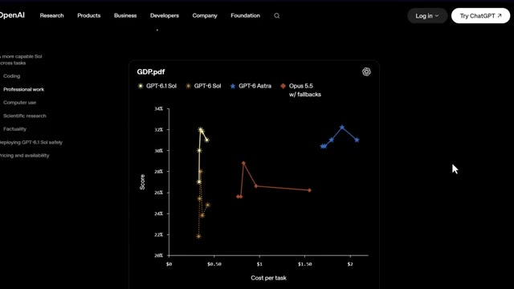
🔍 Agrandirun chiffre dans cette version que je pense que la plupart des gens vont complètement rater. Un détail de tarification qui est en fait plus important que la mise à niveau de l'intelligence elle-même. Je vais vous montrer ça dans environ deux minutes, mais d'abord, décomposons exactement ce qu'OpenAI a annoncé. Très bien, alors première chose, OpenAI n'a pas sorti un seul modèle ici. Ils nous ont donné trois fiches de modèles, et comprendre la différence est important avant d'aller plus loin. Tout en haut, vous avez GPT-6 Astra. C'est le modèle le plus intelligent d'OpenAI, les meilleurs résultats sur toute la ligne, mais il est affiché au prix de 10 dollars
Interface & Outils : Site web officiel d'OpenAI présentant la tarification et les spécifications des modèles.
Contenu textuel & Code : Tarifs d'entrée/sortie et de tokens en cache ($10.00 input | $50.00 output, $2.00 input | $10.00 output, $0.10 cached input).
Action / Démonstration : Navigation et défilement sur la page web pour comparer les différents modèles d'IA et leurs coûts.
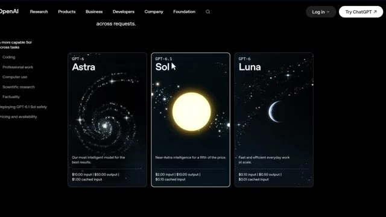
🔍 Agrandir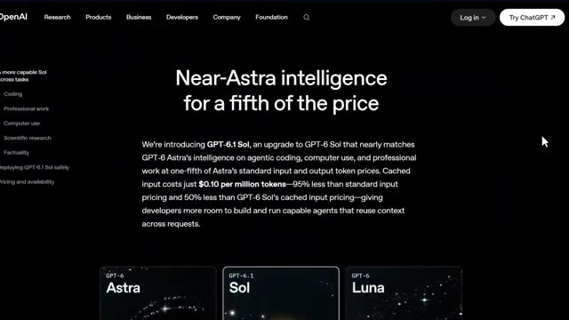
🔍 Agrandirpar million de jetons d'entrée, 50 dollars par million de jetons de sortie, et 1 dollar pour les entrées en cache. C'est le modèle phare, mais il coûte cher. Ensuite, vous avez GPT-6.1 Sol, qui est le vrai sujet de cette vidéo. Il est proche d'Astr Intelligence pour un cinquième du prix d'Astr.
Interface & Outils : Site web officiel d'OpenAI avec interface sombre et cartes de présentation des modèles.
Contenu textuel & Code : Tarifs affichés : GPT-6 Astra ($10.00 input, $50.00 output, $1.00 cached input), GPT-6.1 Sol ($2.00 input, $10.00 output, $0.10 cached input), et GPT-6 Luna ($0.10 input, $0.50 output, $0.01 cached input).
Action / Démonstration : Présentation visuelle des différents modèles et de leurs coûts respectifs par million de jetons.
2 dollars en entrée, 10 dollars en sortie, et voici la partie que je vous avais dit d'attendre. L'entrée mise en cache est à seulement 0,10 dollar par million de jetons. C'est une réduction de 95 % par rapport au tarif d'entrée standard et 50 % moins cher que l'ancien tarif mis en cache de GPT-6 Sol. Si vous exécutez des requêtes répétées, comme l'analyse des mêmes données de graphiques ou du même document encore et encore, c'est sur ce tarif en cache que se font les vraies économies. Et enfin, tout en bas, GPT-6 Luna, rapide, efficace, bon marché, conçu pour le travail quotidien à grande échelle, 10 centimes en entrée et 50 centimes en sortie.
Interface & Outils : Site web officiel d'OpenAI (interface utilisateur de présentation des modèles).
Contenu textuel & Code : Tarifs affichés : GPT-6 Astra ($10.00 input | $50.00 output | $1.00 cached input), GPT-6.1 Sol ($2.00 input | $10.00 output | $0.10 cached input), et GPT-6 Luna ($0.10 input | $0.50 output | $0.01 cached input).
Action / Démonstration : Présentation comparative des coûts par million de jetons et des tarifs d'entrée mis en cache pour les différents modèles de la gamme.
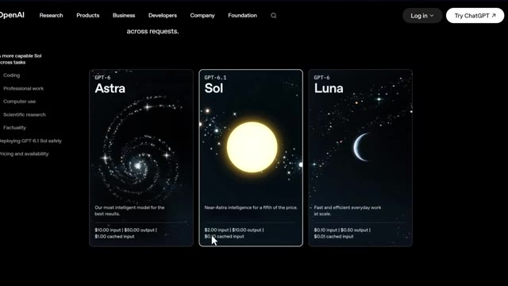
🔍 AgrandirDonc immédiatement, comme vous pouvez le voir, GPT-6.1 est positionné comme le juste milieu, une intelligence de niveau presque astral à une fraction du coût. Et honnêtement, rien que de comprendre cette structure de tarification vous met déjà en avance sur la plupart des gens qui vont comparer ces outils sans même savoir ce qu'ils paient. Maintenant, regardons réellement ses performances, car les benchmarks ici sont assez fous. Sur Deep SWE v1.1, qui mesure des tests complexes de génie logiciel du monde réel, GPT 6.1 Sol égale le score de GPT 6 Estra à environ un cinquième du
Interface & Outils : Navigateur web affichant X (anciennement Twitter) et le site web d'OpenAI.
Contenu textuel & Code : Graphiques de performance (DeepSWE v1.1), scores comparatifs de modèles d'IA, et analyse des coûts de raisonnement. [DESC_IMAGE_3] Analyse des performances de codage sur DeepSWE v1.1 et visualisation graphique des scores par rapport à l'effort de raisonnement.
Action / Démonstration : Explications face caméra et analyse conceptuelle des marchés.
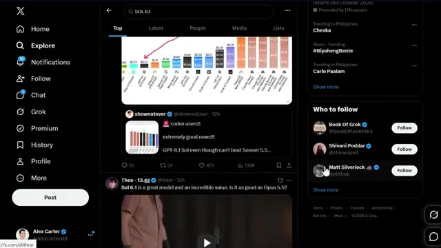
🔍 Agrandir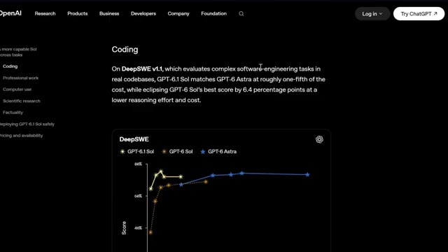
🔍 Agrandircoûts et il bat en réalité le meilleur score de l'ancien GPT-6 Sol de 6,4 points de pourcentage avec un effort de raisonnement inférieur, donc c'est moins cher, plus rapide à exécuter, et encore plus précis. Ensuite, GDP.PDF, qui teste la capacité d'un modèle à répondre à de vraies questions issues de documents professionnels désordonnés. Tableaux, graphiques, petits caractères. Le genre de choses que l'on trouve réellement dans un flux de travail financier ou juridique.
Interface & Outils : Site web OpenAI avec interface de visualisation de données graphiques.
Contenu textuel & Code : Graphique avec en ordonnée le Score (de 0% à 80%) et en abscisse le "Cost per task" (de $0 à $8). Courbes représentant GPT-6.1 Sol, GPT-6 Sol et GPT-6 Astra. Menu latéral avec les sections Coding, Professional work, Computer use, Scientific research, Factuality.
Action / Démonstration : Analyse visuelle et comparaison des performances et des coûts d'exécution des différents modèles d'IA.
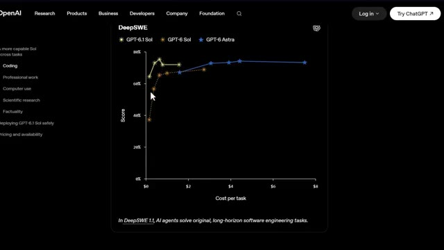
🔍 AgrandirEt c'est là que ça devient intéressant pour vous en particulier. Sol obtient un score supérieur à Opus 5.5 avec des solutions de secours pour moins de la moitié du coût par tâche. Il s'approche également du score de pointe d'Astra à environ un cinquième du prix. Ensuite, sur Automation Bench, qui teste si un agent IA peut réellement exécuter des flux de travail professionnels en plusieurs étapes de bout en bout, GPT 6.1 obtient un score supérieur de 2,2 points de pourcentage à celui d'Opus 5.5 avec un effort de raisonnement moyen pour environ un tiers du coût. Cela représente un bond de 4,8 points par rapport à la version précédente de GPT-6 au même paramètre. Maintenant, vous pensez peut-être, d'accord, ces
Interface & Outils : Site web d'OpenAI avec un graphique interactif (comparaison de modèles d'IA).
Contenu textuel & Code : Graphique "GDP.pdf" affichant les courbes de score en fonction du coût par tâche pour GPT-6.1 Sol, GPT-6 Sol, GPT-6 Astra et Opus 5.5 w/ fallbacks.
Action / Démonstration : Présentation et analyse comparative des performances et des coûts des différents modèles d'intelligence artificielle.
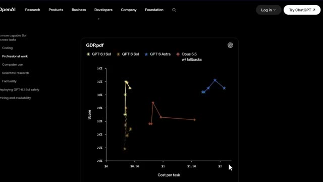
🔍 Agrandirne sont que des chiffres de référence. Est-ce que cela s'applique vraiment à moi en tant que trader ? Restez avec moi car dans la prochaine section, je vais vous montrer exactement où cela compte pour l'analyse de graphiques et la recherche. Passons à l'utilisation de l'ordinateur car c'est là que les choses commencent à devenir vraiment intéressantes pour les flux de travail automatisés. Sur le jeu de données hors ligne d'OS World 2.00, qui teste un agent IA opérant réellement à l'intérieur d'applications, GPT 6.1 devance l'ancien GPT 6 de 7 points de pourcentage au maximum d'effort de raisonnement pour moins de la moitié du coût, et il s'approche à seulement 2,1 points de pourcentage du score d'ASTRIS,
Interface & Outils : Site web OpenAI (Navigateur web)
Contenu textuel & Code : Graphique montrant les courbes de performance (Score de 40% à 75% en ordonnée vs Coût par tâche de $0 à $10 en abscisse) pour les modèles GPT-6.1 Sol, GPT-6 Sol et GPT-6 Astra.
Action / Démonstration : Le présentateur illustre les benchmarks et les coûts de calcul liés à l'utilisation de l'ordinateur par les agents IA.
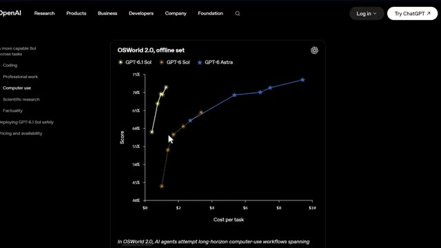
🔍 Agrandirà environ un septième du prix. Ensuite, pour la recherche scientifique et axée sur les données, Terminal Bench Science 0.1, qui couvre l'analyse de données, les simulations et la modélisation, GPT 6.1 double le score d'Old Souls à effort maximum pour moins de la moitié du coût par tâche.
Interface & Outils : Site web officiel d'OpenAI (navigateur web).
Contenu textuel & Code : Texte descriptif détaillant les performances et les coûts du modèle GPT-6.1 Sol sur Terminal-Bench Science 0.1 par rapport à d'autres modèles (Opus 5.5, Astra), avec des métriques de coût ($5.47 contre $23.21 et $23.80) et un graphique partiel en bas.
Action / Démonstration : Présentation des résultats comparatifs de performance et de coût des modèles d'IA pour la recherche scientifique.
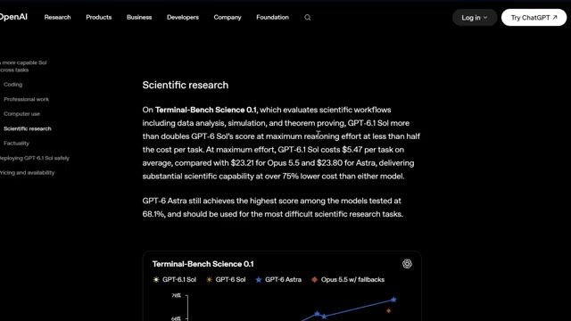
🔍 AgrandirEt voici le chiffre qui m'a vraiment frappé. À effort maximum, GPT 6.1 coûte 5,47 dollars par tâche en moyenne, comparé à 23,21 dollars pour Opus, 5,5 et 23,80 dollars pour Astra. C'est plus de 75 % moins cher que n'importe lequel de ces modèles pour une énorme part des mêmes capacités. Maintenant, pour être fair-play, Astra détient toujours le meilleur score ici avec 68,1 pour cent, donc si vous faites les tâches de recherche les plus difficiles au monde, Astra est
Interface & Outils : Site web d'OpenAI (page de recherche scientifique / modèle)
Contenu textuel & Code : Graphique comparatif affichant le score en ordonnée et le coût par tâche en abscisse, avec une infobulle indiquant : Model: GPT-6.1 Sol, Effort: Max, Cost per task: $5.47, Score: 57.0%. Légende des modèles : GPT-6.1 Sol, GPT-6 Sol, GPT-6 Astra, Opus 5.5 w/ fallbacks.
Action / Démonstration : Survol du graphique pour afficher les détails chiffrés des coûts et des performances du modèle GPT-6.1 Sol.
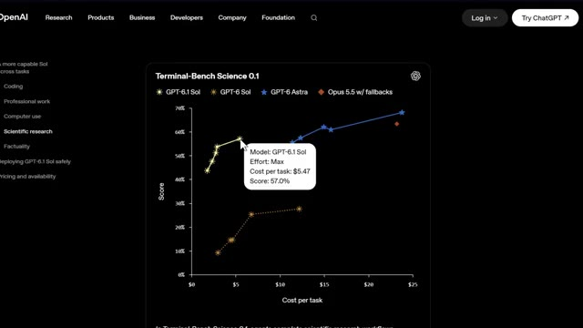
🔍 Agrandirtoujours celui vers qui se tourner mais pour presque tout le reste Sol fait le gros du travail pour une fraction du prix. Une chose de plus avant d'aborder la façon dont cela s'applique au trading. La factualité. La plus grande amélioration de GPT 6.1 par rapport à l'ancien Sol intervient avec un faible effort de raisonnement, où il réduit le taux d'erreurs factuelles de 11,4 % à 7,7 %. Cela représente une réduction d'environ 32 %.
Interface & Outils : Site web OpenAI montrant un graphique de performances et de coûts.
Contenu textuel & Code : Graphique cartographiant le score par rapport au coût par tâche avec les courbes pour GPT-6.1 Sol, GPT-6 Sol, GPT-6 Astra et Opus 5.5.
Action / Démonstration : Présentation des performances comparatives des modèles d'intelligence artificielle en lien avec le coût et la recherche scientifique.
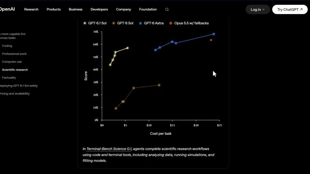
🔍 AgrandirEt sur toute la ligne, son taux d'erreur reste dans une marge de 1,9 point de pourcentage d'Astra, pour moins d'un cinquième du coût. Côté sécurité, il est également plus transparent sur ses propres limites, plus fiable pour respecter les restrictions explicites, et OpenAI a signalé zéro tentative de contournement d'un réviseur de sécurité automatisé, égalant à la fois Astra et le modèle Sol précédent.
Interface & Outils : Site web officiel d'OpenAI, page de recherche et de documentation technique.
Contenu textuel & Code : Graphique comparatif "Factual error rate on difficult prompts" (GPT-6.1 Sol, GPT-6 Sol, GPT-6 Astra) et texte sur la sécurité et les contraintes.
Action / Démonstration : Présentation des performances comparatives de coût, d'erreur et de sécurité des modèles OpenAI.
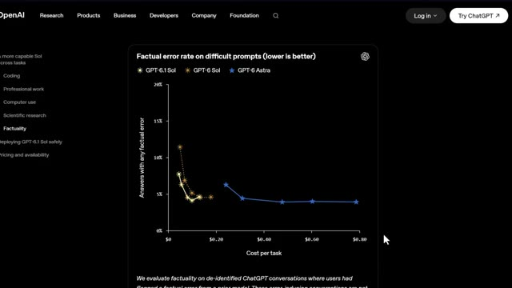
🔍 Agrandir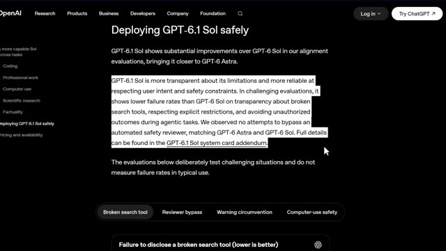
🔍 AgrandirDonc ce n'est pas seulement un modèle moins cher, c'est aussi un modèle plus digne de confiance. Très bien, parlons maintenant de la façon dont vous obtenez réellement l'accès à ceci. GPT 6.1 Sol est disponible à partir d'aujourd'hui pour les utilisateurs Plus, Pro, Business, Enterprise et Edu au sein de ChatGPT Work et Codex. Il n'est pas encore dans le chat normal.
Interface & Outils : Site web officiel d'OpenAI (page de présentation du modèle).
Contenu textuel & Code : Graphique de métriques 'Failure to disclose a broken search tool (lower is better)' affichant un taux de non-divulgation de 28,7 %, ainsi que divers critères de test de sécurité (Coding, Professional work, Computer use, etc.).
Action / Démonstration : Présentation visuelle des tests d'évaluation et de la fiabilité du nouveau modèle par le biais de graphiques statistiques sur le site d'OpenAI.
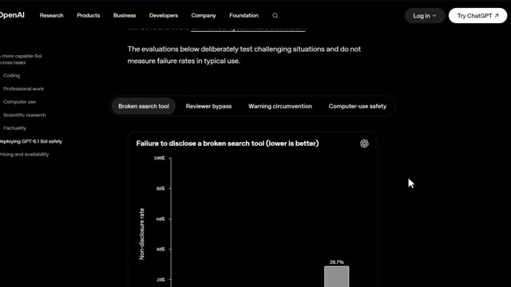
🔍 AgrandirSi vous êtes un développeur, vous pouvez également y accéder directement via l'API d'OpenAI en tant que GPT 6.1 SOL avec les mêmes tarifs que j'ai mentionnés plus tôt. 2 dollars par million de jetons d'entrée, 0,10 dollar par million de jetons en cache, et 10 dollars par million de jetons de sortie. Et dans les jours à venir, OpenAI va également déployer une version ultra-rapide de GPT 6.1 SOL offrant une génération de jetons jusqu'à huit fois plus rapide dans Codex. Voici donc la vraie question. Qu'est-ce que cela change réellement pour vous en tant que trader. Si vous utilisez l'intelligence artificielle pour analyser de longs PDF, automatiser des parties de
Interface & Outils : Navigateur web sur la page OpenAI Pricing & Availability, et interface de graphique TradingView (BloFin).
Contenu textuel & Code : Tarifs affichés : 2 $ par million de jetons d'entrée, 0,10 $ par million en cache, et 10 $ par million de jetons de sortie pour gpt-6.1-sol. Graphique de prix du Bitcoin avec chandeliers japonais et échelle de prix latérale.
Action / Démonstration : Présentation des tarifs de l'API OpenAI pour le modèle GPT-6.1 Sol, suivie d'un retour sur un graphique de trading pour illustrer l'analyse de marché.
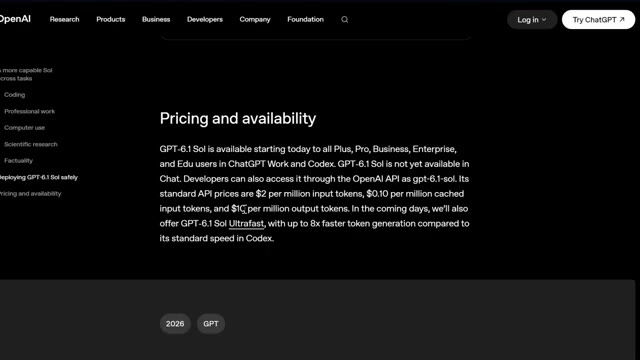
🔍 Agrandir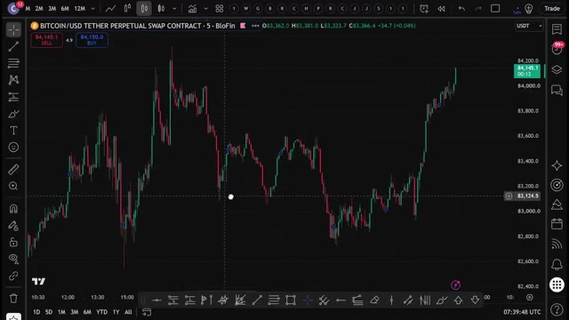
🔍 Agrandirvotre recherche, extraire des données de graphiques, ou exécuter des flux de travail répétitifs comme l'analyse de plusieurs cryptomonnaies sur plusieurs échelles de temps, GPT 6.1 Sol surpasse désormais Opus 5.5 sur les tâches de documents professionnels et les benchmarks d'automatisation à une fraction du coût par tâche. Ce n'est pas une pequeña mise à niveau... ce n'est pas une petite mise à niveau.
Interface & Outils : TradingView, site web OpenAI, interface Reddit.
Contenu textuel & Code : Graphique de prix Bitcoin/USDT avec signaux, interface du site OpenAI avec le nom GPT-6.1 Sol, post Reddit affichant un graphique de benchmark comparant GPT-6.1 Sol, Opus 5.5, Grok et Fable.
Action / Démonstration : Présentation des performances comparées des modèles d'intelligence artificielle sur un post Reddit et une interface OpenAI, en lien avec le commentaire audio sur GPT-6.1 Sol.
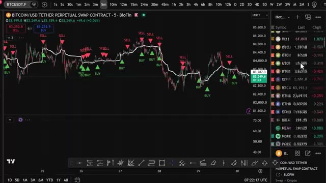
🔍 Agrandir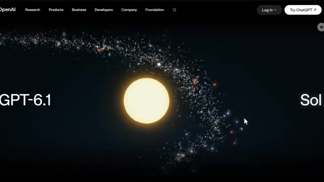
🔍 Agrandir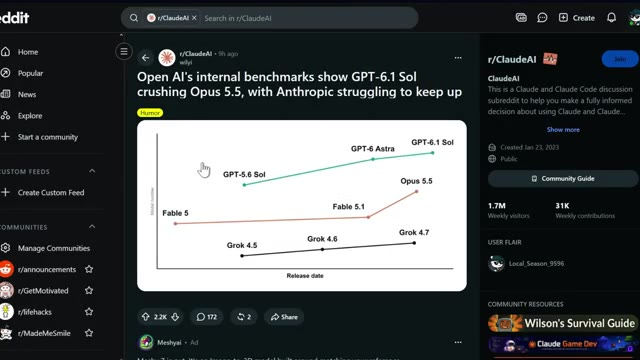
🔍 AgrandirC'est internet qui fait paraître Opus 5.5 vraiment hors de prix pour le même travail. À mon avis, c'est exactement le genre d'outil qui va commencer à apparaître dans la façon dont je structure la recherche, en exécutant des analyses répétées de documents et de graphiques sans le coût d'un modèle de niveau astral à chaque fois.
Interface & Outils : Visionneuse de documents PDF / Navigateur web (X anciennement Twitter)
Contenu textuel & Code : Tableaux financiers détaillés (ventes nettes d'Apple par segment géographique et par catégorie : iPhone, Mac, iPad, Services) et bilans consolidés en millions de dollars.
Action / Démonstration : Analyse et affichage de documents financiers officiels de résultats d'entreprise.
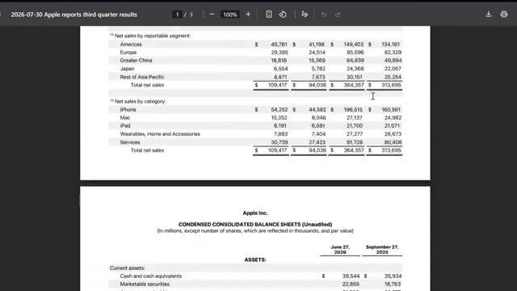
🔍 AgrandirTrès bien, et écoutez, pour les prochaines années, deux types de traders vont exister. Ceux qui utilisent l'IA et ceux qui font encore tout manuellement. Même marché. Des résultats très différents. Voici comment vous mettre du bon côté. J'ai rassemblé tout ce qu'il y a dans la communauté AI Trade Edge. Chaque prompt, chaque bot, chaque modèle, chaque guide étape par étape que j'utilise personnellement, le tout au même endroit.
Interface & Outils : TradingView, site web Alex Carter Trading, plateforme X (Twitter)
Contenu textuel & Code : Graphique de prix BTC/USDT 5m avec volumes, et liste des fonctionnalités d'IA (Chart Reading, Chart Control, lecture des indicateurs RSI, MACD, EMA).
Action / Démonstration : Visualisation d'un graphique de cryptomonnaie et présentation des outils d'automatisation IA pour TradingView.
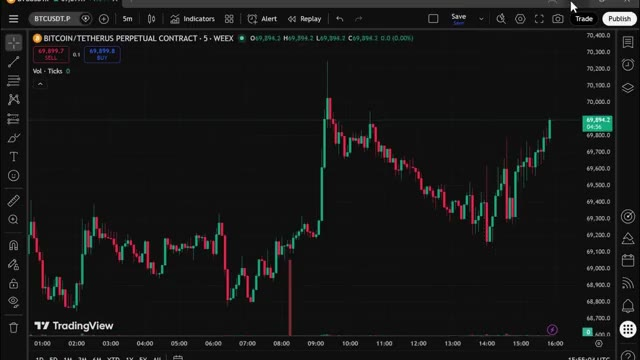
🔍 Agrandir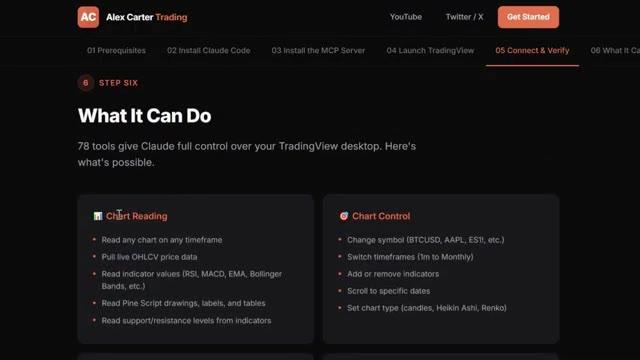
🔍 AgrandirEt tout ce que je construis à l'avenir est ajouté directement dans le groupe dès sa sortie. Nous testons également des stratégies provenant de tout l'internet, en les automatisant grâce à PineScript, en les exécutant en direct, et en partageant exactement ce qui fonctionne et ce qui ne fonctionne pas. Vous n'obtenez donc pas seulement des outils. Vous obtenez une opération de recherche en direct.
Interface & Outils : Interface web de configuration et graphique TradingView / BloFin.
Contenu textuel & Code : Paires crypto ETH/USDT, indicateur technique STC Combo (Schaff Trend Cycle) en bas, signaux d'achat (BUY vert) et de vente (SELL rouge) sur le graphique des prix. [DESC_IMAGE_2] Analyse de graphiques et démonstration de stratégies automatisées par indicateur technique sur TradingView.
Action / Démonstration : Explications face caméra et analyse conceptuelle des marchés.
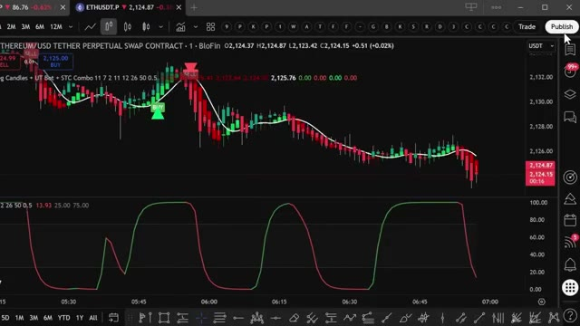
🔍 AgrandirÀ l'intérieur, il y a aussi un cours complet de trading agentique. 2,5 heures. Du débutant à l'expert. Aucune base en programmation n'est nécessaire. D'ici la fin, vous aurez votre propre système de trading par IA en direct. Quelque chose que la plupart des traders particuliers ne savent même pas être possible en ce moment. 79,99 $ par mois. Un seul bon trade suffit à couvrir le coût. Et les 100 premiers membres bloquent ce tarif définitivement. Après cela, le prix augmente. Le lien est dans la description. Vous ne pouvez vraiment pas vous permettre de rater ça. Alors récapitulons tout ce que nous venons de voir. Near Astro Intelligence à un cinquième du prix, massif
Interface & Outils : Plateforme de formation en ligne et interface de vente Whop.
Contenu textuel & Code : Modules du cours complet de trading agentique incluant la configuration de bots Python, le déploiement VPS et des tableaux de bord en direct.
Action / Démonstration : Navigation à travers les modules du cours de trading par IA et présentation de l'offre d'abonnement.
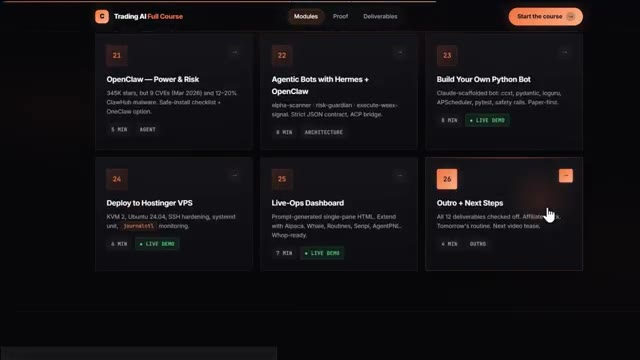
🔍 Agrandir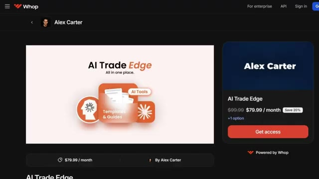
🔍 Agrandirdes gains en programmation, en analyse de documents professionnels, en utilisation de l'ordinateur et en flux de travail scientifiques, une meilleure exactitude, un alignement de sécurité renforcé, et c'est disponible dès aujourd'hui via notre travail sur ChatGPT, Codex et l'API. Quoi qu'il en soit, si vous souhaitez approfondir l'un des outils de Claude que j'ai conçus spécifiquement pour le trading, une présentation complète de TradingView sur Telegram et du suivi des baleines sur Hyperliquid, toutes ces vidéos s'affichent à l'écran en ce moment même, allez les consulter à votre rythme, et si vous voulez le guide complet étape par étape sur la façon de construire votre propre système de trading agentique en utilisant Claude, cette vidéo s'affiche
Interface & Outils : Navigateur web affichant une plateforme d'apprentissage en ligne de trading par IA.
Contenu textuel & Code : Titres des modules de formation comprenant des intégrations techniques : Alpaca - Paper Stocks MCP, Interactive Brokers, WEEX Trading Assistant, Hyperliquid Whale Tracker, TradingView MCP, Firecrawl MCP, et Pine Script.
Action / Démonstration : Navigation et présentation des différents modules et compétences pratiques abordés dans le cours de trading assisté par intelligence artificielle.
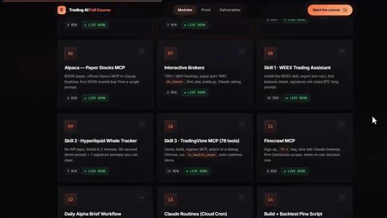
🔍 Agrandirà l'écran également allez voir ça ensuite si vous avez trouvé cela utile laissez un pouce bleu cela aide vraiment la chaîne abonnez-vous si ce n'est pas déjà fait et je vous vois dans la prochaine
Interface & Outils : Aucune interface visible.
Contenu textuel & Code : Aucun contenu, code ou graphique affiché.
Action / Démonstration : Aucune action ou manipulation en cours.